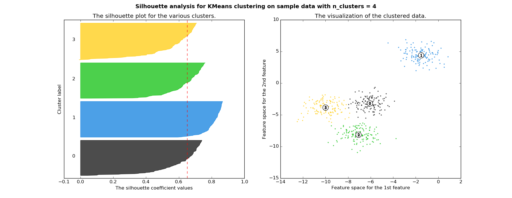

Creating Customer Segments
Your project could not be reviewed. Please resubmit after you address the issue noted below by the reviewer.
Key parts of your submission were the same as another student's submission or an online source. Please resubmit after you address the issue noted below by the reviewer.
None provided
None provided
This is a very solid analysis here and impressed with your answers. You have an excellent grasp on these unsupervised learning techniques. We don't pass to many on the first attempt, so congrats! Wish you the best of luck in your future!
If you would like to dive in deeper into Machine Learning material, here might be some cool books to check out
Three separate samples of the data are chosen and their establishment representations are proposed based on the statistical description of the dataset.
Great analysis here and good justification for your samples here by using the mean values in the dataset. Just note that using the median/percentiles would be much more appropriate than mean, since the median/percentiles are more robust to outliers, which we have here. But nice job!
Another really cool visualization you could make to analyze the distribution of purchasing behavior of your sample, would be with a Radar Plot
import matplotlib.pyplot as plt
from sklearn.preprocessing import MinMaxScaler
%matplotlib inline
scaler = MinMaxScaler()
df = np.round(samples, 1)
index = df.index[:]
categories = list(df)
df = scaler.fit_transform(df)*100
N = len(categories)
angles = [n / float(N) * 2 * np.pi for n in range(N)]
angles += angles[:1]
plt.figure(figsize=(20, 5))
def Radar(index, title, color):
ax = plt.subplot(1, 3, index+1, polar=True)
ax.set_theta_offset(np.pi/2)
ax.set_theta_direction(-1)
plt.xticks(angles[:-1], categories, color ='grey', size = 8)
plt.yticks((25, 50, 75, 100), ("1/4", "1/2", "3/4", "Max"), color = "grey", size = 7)
values = df[index]
values = np.append(values, values[:1])
ax.plot(angles, values, color = color)
ax.fill(angles, values, color=color, alpha=0.5)
plt.title('Sample {}'.format(title), y= 1.1)
for i, n in enumerate(index):
Radar(index=i, title=n, color='r')
A prediction score for the removed feature is accurately reported. Justification is made for whether the removed feature is relevant.
"On the other hand, the high coefficient of determination scores for Grocery and Detergents_Paper (above 0.7 and close to 1.0) show that these features can be predicted using the other 5 remaining features, which means these 2 features might not be as relevant as the other features when it comes to determining customers' spending habits."
Correct. Grocery and Detergents_Paper can be derived from the other features, so not necessary. Thus if we have a high r^2 score(high correlation with other features), this would not be good for identifying customers' spending habits(since the customer would purchase other products along with the one we are predicting, as we could actually derive this feature from the rest of the features). Therefore a negative / low r^2 value would represent the opposite as we could identify the customer's specific behavior just from the one feature.
Maybe also check out with features can derive Grocery and Detergents_Paper. Each other?
import seaborn as sns
sns.barplot(X_train.columns, regressor.feature_importances_)
Student identifies features that are correlated and compares these features to the predicted feature. Student further discusses the data distribution for those features.
Great job capturing the correlation between features. Maybe also add correlation to the plot as well with
axes = pd.scatter_matrix(data, alpha = 0.3, figsize = (14,8), diagonal = 'kde')
corr = data.corr().as_matrix()
for i, j in zip(*np.triu_indices_from(axes, k=1)):
axes[i, j].annotate("%.3f" %corr[i,j], (0.8, 0.8), xycoords='axes fraction', ha='center', va='center')
And good ideas regarding the data distributions with your comment of
"Based on the above scatter matrix, the dataset is right-skewed with a large number of data points located near 0."
Skewed right is correct. Could also mention log normal. As we can
actually get an idea of this from the basic stats of the dataset, since
the mean is above the median for all features. We typically see this type of distribution when working with sales or income data.
Feature scaling for both the data and the sample data has been properly implemented in code.
Student identifies extreme outliers and discusses whether the outliers should be removed. Justification is made for any data points removed.
Great job discovering the indices of the five data points which are outliers for more than one feature of [65, 66, 75, 128, 154].
Outlier removal is a tender subject, as we definitely don't want to remove too many with this small dataset. But we definitely need to remove some, since outliers can greatly affect distributions, influence a distance based algorithm like clustering and/or PCA! The loss function of the K-means algorithm is defined the terms of sum-of-squared distances, making it sensitive to outliers. In an attempt to reduce the loss function, the algorithm would move a centroid away from the true center of a cluster towards the outlier. This is clearly not the behavior we want.
One cool thing about unsupervised learning is that we could actually run our future analysis with these data points removed and with these data points included and see how the results change.
(http://www.theanalysisfactor.com/outliers-to-drop-or-not-to-drop/)
(http://graphpad.com/guides/prism/6/statistics/index.htm?stat_checklist_identifying_outliers.htm)
Maybe also examine these duplicate data points further with a heatmap in the original data.
# Heatmap using percentiles to display outlier data
import matplotlib.pyplot as plt
import seaborn as sns
percentiles = data.rank(pct=True)
percentiles = percentiles.iloc[outliers]
plt.title('Multiple Outliers Heatmap', fontsize=14)
heat = sns.heatmap(percentiles, annot=True)
display(heat)
The total variance explained for two and four dimensions of the data from PCA is accurately reported. The first four dimensions are interpreted as a representation of customer spending with justification.
Nice work with the cumulative explained variance for two and four dimensions.
And good analysis of these PCA components. As always remember that the sign of the features in the component really wouldn't matter too much, since if we multiply the entire PCA dimension by -1 it would still be the same PCA component(so in PCA3 Fresh and Deli could be switched!).
To go even further here with the interpretation of the PCA components:
Pro Tip: You can also visualize the percent of
variance explained to get a very clear understanding of the drop off
between dimension. Here is a some starter code, as np.cumsum acts like += in python.
import matplotlib.pyplot as plt
x = np.arange(1, 7)
plt.plot(x, np.cumsum(pca.explained_variance_ratio_), '-o')
PCA has been properly implemented and applied to both the scaled data and scaled sample data for the two-dimensional case in code.
The Gaussian Mixture Model and K-Means algorithms have been compared in detail. Student’s choice of algorithm is justified based on the characteristics of the algorithm and data.
Good comparison and choice in GMM, as I would choose the same. As we can actually measure the level of uncertainty of our predictions!
Since you have mentioned the speed comparison. Try this, as we can run the speed comparison explicitly as well in terms of this specific dataset.
(Note this may take a while to run, you can reduce n if desired)
import time
from sklearn.cluster import KMeans
from sklearn.mixture import GaussianMixture
import matplotlib.pyplot as plt
n = 1000
k = 6
kmeans_train_times = []
for k in xrange(1, 7):
cum_time = 0.
for i in xrange(n):
start = time.time()
KMeans(n_clusters=k).fit(reduced_data)
cum_time += (time.time() - start)
train_time = cum_time / n
kmeans_train_times.append([k, train_time])
km_df = pd.DataFrame(kmeans_train_times, columns=['KM_Clusters', 'KM_Time'])
gmm_train_times = []
for k in xrange(1, 7):
cum_time = 0.
for i in xrange(n):
start = time.time()
GaussianMixture(n_components=k).fit(reduced_data)
cum_time += (time.time() - start)
train_time = cum_time / n
gmm_train_times.append([k, train_time])
gmm_df = pd.DataFrame(gmm_train_times, columns=['GMM_Components', 'GMM_Time'])
times_df = km_df.join(gmm_df)
plt.plot(times_df.GMM_Components, times_df.GMM_Time * 1000., label='GMM Train Time')
plt.plot(times_df.GMM_Components, times_df.KM_Time * 1000., label='Kmeans Train Time')
plt.legend(loc='best')
plt.ylabel('Train time (in millisec.)')
plt.xlabel('Cluster/Components Used in Training')
plt.title('Training Time for Different Cluster/Component Sizes \n Averaged Over {} Runs Per Size'.format(n))
plt.show()
Several silhouette scores are accurately reported, and the optimal number of clusters is chosen based on the best reported score. The cluster visualization provided produces the optimal number of clusters based on the clustering algorithm chosen.
Good work with the for loop! As we can clearly see that K = 2 gives the highest silhouette score. Another cool interpretation method for Silhouette score is like this
(http://scikit-learn.org/stable/auto_examples/cluster/plot_kmeans_silhouette_analysis.html)

The establishments represented by each customer segment are proposed based on the statistical description of the dataset. The inverse transformation and inverse scaling has been properly implemented and applied to the cluster centers in code.
Good justification for your cluster centroids by comparing the cluster centers with dataset mean values. You could also examine the reduce PCA plot. Anything interesting about dimension 1 and how the clusters are split?
Pro Tip: We can also add the mean values from the data and very easily visualize the cluster centroids with a pandas bar plot
true_centers = true_centers.append(data.describe().ix['mean'])
true_centers.plot(kind = 'bar', figsize = (16, 4))
Sample points are correctly identified by customer segment, and the predicted cluster for each sample point is discussed.
Excellent justification for your predictions by comparing the purchasing behavior of the sample to the purchasing behavior of the cluster centroid!
Could also check out the distance to each cluster centroid for justification
for i, pred in enumerate(sample_preds):
print("Sample point", i, "predicted to be in Cluster", pred)
print('The distance between sample point {} and center of cluster {}:'.format(i, pred))
print((samples.iloc[i] - true_centers.iloc[pred]))
Student correctly identifies how an A/B test can be performed on customers after a change in the wholesale distributor’s service.
"A sample of customers from 2 customer segments can be selected and applied the new delivery schedule, while the rest of customers will still have the original delivery service. This allows us to have 2 sets of control and test groups. If there's positive response from the test groups (results of test groups is better than results of control group), we can roll out the change to the whole customer base or to the whole customer segment that responds positively to the change."
Exactly! The key takeaway here is that we should run separate A/B
tests for each cluster independently. As if we were to use all of our
customers we would essentially have multiple variables(different
delivery methods and different purchasing behaviors).
https://en.wikipedia.org/wiki/A/B_testing#Segmentation_and_targeting
https://stats.stackexchange.com/questions/192752/clustering-and-a-b-testing
The two clusters that we have in our model reveal two different consumer profiles that can be tested via A/B test. To better assess the impact of the changes on the delivery service, we would have to split the segment 0 and segment 1 into subgroups measuring its consequences within a delta time. Hypothetically we can raise a scenario where the segment 0 is A/B tested. For this we divide the segment 0 (can also be implemented in segment 1) into two sub-groups of establishments where only one of them would suffer the implementation of the new delivery period of three days a week, and the another would remain as a control with five days a week as usual. After a certain period of time, we could, through the consumption levels of the establishments, come to some conclusions, such as: whether the new frequency of deliveries is sufficient or not for a buyer. Where a sensible increase in overall consumption of all products may indicate the need for the establishment to maintain a storage because of the decreasing delivery frequency; or if it negatively affects the consumption profile of certain products, like groups of costumers who have greater buying fresh produce that can be negatively impacted, precisely because of the demand for fresh products with a higher delivery frequency. We can not say that the change in frequency will affect equally all customers because of the different consumption profiles that are part of the two segments. There will therefore consumers that will be affected, and possibly groups of buyers who will not undergo any change.
Student discusses with justification how the clustering data can be used in a supervised learner for new predictions.
Nice idea to use the cluster assignment as new labels. This refers to the idea of semi-supervised learning.
Another cool idea would be to use a subset of the newly engineered PCA components as new features(great for curing the curse of dimensionality). PCA is really cool and seem almost like magic at time. Just wait till you work with hundreds of features and you can reduce them down into just a handful. This technique becomes very handy especially with images. There is actually a handwritten digits dataset, using the "famous MNIST data" where you do just this and can get around a 98% classification accuracy after doing so. This is a kaggle competition and if you want to learn more check it out here KAGGLE
Comparison is made between customer segments and customer ‘Channel’ data. Discussion of customer segments being identified by ‘Channel’ data is provided, including whether this representation is consistent with previous results.
Real world data is really never perfectly linearly separable but it seems as our K-Means algorithm did a decent job.
Maybe also fully examine how well the clustering algorithm did!
#find percentage of correctly classified customers
data = pd.read_csv("customers.csv")
data = data.drop(data.index[outliers]).reset_index(drop = True)
# might need to switch around the 0 and 1, based on your cluster seed
df = np.where(data['Channel'] == 2, 1, 0)
print("Percentage of correctly classified customers: {:.2%}".format(sum(df == preds)/float(len(preds))))